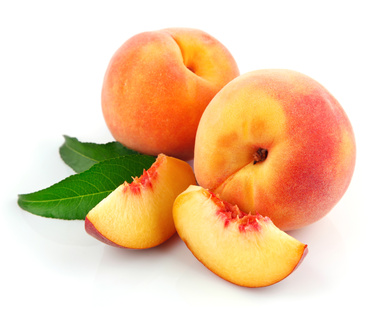

Peaches & Nectarines (Prunus persica)

Mating & Breeding System: All flowers in the genus Prunus are similar to those of apple and pear, except that they only have one style and one ovary containing a pair of ovules. Most varieties of peach and nectarine are self-compatible, including within a single flower (to what extent this happens can depend on cultivar). Thus, pollenizers are not required for successful fruit set, and insects do not seem to play a significant role in moving pollen under most conditions.
Pollination, Quality & Yield: In self-compatible stone fruit crops "over-pollination" can occur. If this happens, the trees attempt to mature too many fruit. The result is a heavy fruit set and high yield by weight, but many of the fruit will be undersized and of less value. Heavy fruit set can also result in physical damage to the trees.
Pollination Recommendations: Use of honey bees on peaches and nectarines in Ontario is considered "optional", and growers may wish to avoid the use of supplementary pollinators to avoid overpollination.
If poor pollination is a problem in a particular orchard, 1 - 2.5 colonies of honey bees per hectare may be used. Bumble bees and blue orchard bees may also be considered, although there has been little research into the effectiveness of these species. Wild bees and flies may also be helpful, particularly in small orchards adjacent to suitable wild habitat. Unless poor pollination is a problem in a particular orchard, growers may choose to avoid the use of managed pollinators.
References
Kevan, P.G. 1988. Pollination, crops and bees. OMAFRA publication 72.
Scott-Dupree, C.D., Winston, M., Hergert, G., Jay, S.C., Nelson, D., Gates, J., Termeer, B., & Otis, G. 1995. A guide to managing bees for crop pollination. Canadian Association of Professional Apiculturists, Aylesford NS.
Slingerland, K. & Subramanian, J. 2007. Peach and nectarine cultivars. OMAFRA FactSheet 07-041.